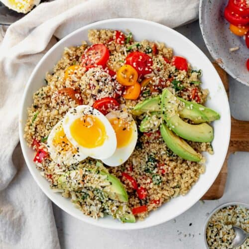
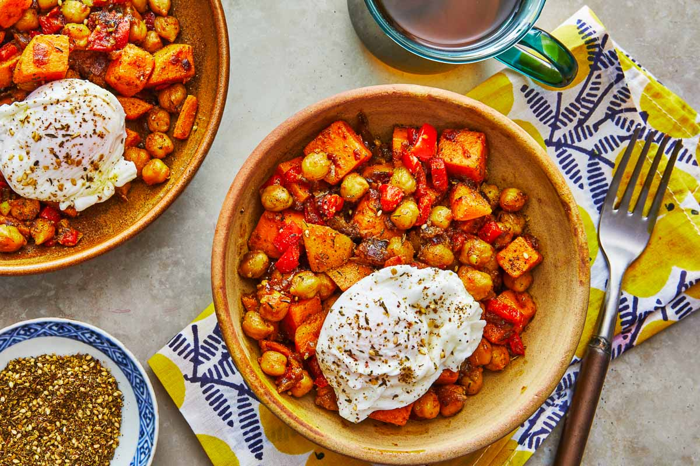
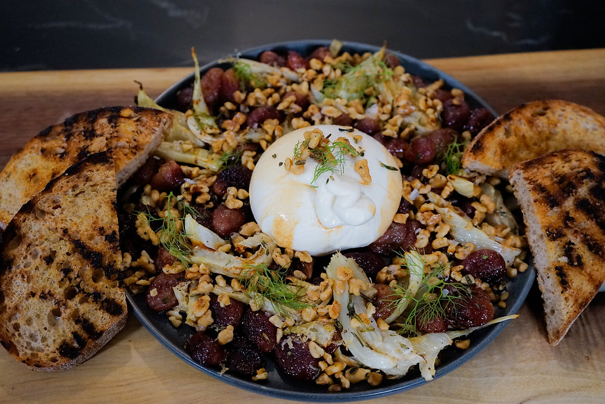
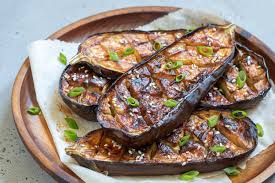
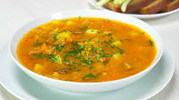
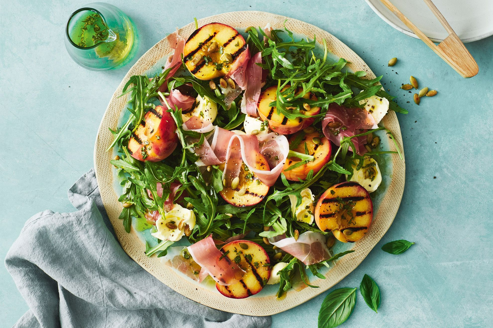
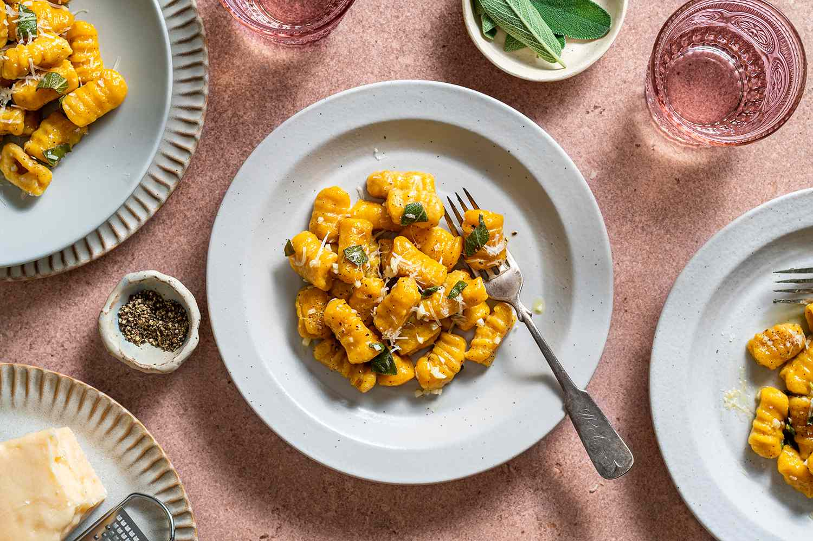

18g | F: 22g | C: 64g
A warm bowl of fluffy red quinoa topped with a cinnamon-spiced almond butter
drizzle, caramelized banana slices, and a sprinkle of chia seeds

20g | F: 24g | C: 48g
A savory skillet of roasted sweet potatoes, chickpeas,
and red bell peppers seasoned with smoked paprika and cumin,
served with two sunny-side-up eggs and a side of harissa yogurt.

14g | F: 36g | C: 22g
Creamy burrata cheese served atop a bed of wild arugula,
drizzled with a warm compote of roasted red grapes,
fresh rosemary, and honey, finished with toasted pine nuts.

6g | F: 14g | C: 38g
Japanese eggplant halves brushed with a sweet and savory white miso glaze,
broiled until caramelized, and garnished with sesame seeds,
scallions, and pickled ginger.

540 Kcal | P: 22g | F: 38g | C: 28g
Grilled Peach & Prosciutto Salad
Fresh mozzarella, peppery arugula, and grilled peaches wrapped in crispy prosciutto,
tossed in a white balsamic vinaigrette with candied pecans.

42g | F: 24g | C: 78g
Creamy Arborio rice infused with saffron and white wine,
loaded with seared jumbo scallops, shrimp, and mussels,
finished with fresh parsley and a lemon zest gremolata.

15g | F: 32g | C: 84g
House-made potato gnocchi pan-fried until golden,
tossed in a brown butter sage sauce with roasted butternut squash,
toasted walnuts, and shaved parmesan.